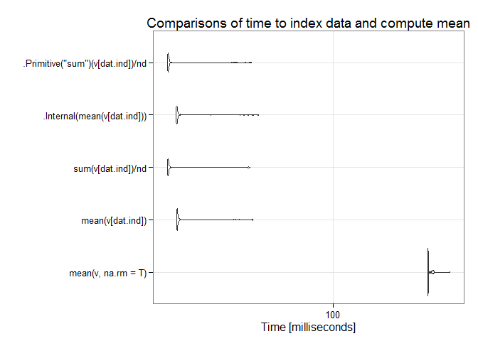
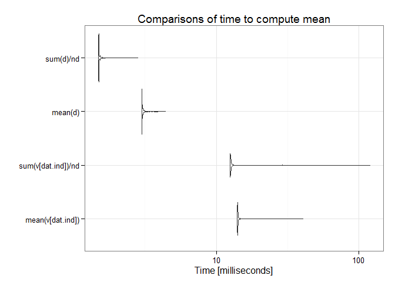

Combining sampling and data reduction methods while using the most efficient R functions can be particularly useful when processing large numbers of high-resolution geotiff raster layers. One thing I already do when extracting from many files by shapefile is I avoid extracting by shape more than once. I do it one time to obtain the corresponding raster layer cell indices. Then on all subsequent maps I extract by cell indices which is notably faster. Ultimately, there is much more room for speed improvements in terms of efficient use of statistics than in strictly programmatic corner-cutting.
The plots below benchmark different sample mean computations. Comparisons involve the sample mean of the entire data set and do not involve the main approach outlined above which focuses on efficiency gains by taking the mean of a smaller, representative sample. This provides some insight into how it is beneficial nonetheless to considering the right programmatic approach in conjunction with statistical efficiencies.
## Unit: milliseconds
## expr min lq mean median
## mean(v, na.rm = T) 391.72624 394.41703 400.18676 396.60150
## mean(v[dat.ind]) 12.70099 14.03021 15.65026 14.11869
## sum(v[dat.ind])/nd 11.59600 12.49542 14.41128 12.57908
## .Internal(mean(v[dat.ind])) 11.85475 13.92136 15.31251 14.02461
## .Primitive("sum")(v[dat.ind])/nd 11.64265 12.52558 14.64885 12.59043
## uq max neval
## 405.79641 431.45015 100
## 14.29751 35.77325 100
## 12.74189 33.53964 100
## 14.27994 34.64276 100
## 12.76692 34.68350 100
## Unit: milliseconds
## expr min lq mean median uq
## mean(v[dat.ind]) 11.334760 13.983870 15.553252 14.034252 14.101117
## sum(v[dat.ind])/nd 9.856569 12.503813 14.155868 12.552330 12.614530
## mean(d) 2.938653 2.945806 2.988915 2.952336 2.982660
## sum(d)/nd 1.477568 1.482544 1.509564 1.488609 1.498716
## max neval
## 125.146676 1000
## 122.904356 1000
## 4.038042 1000
## 2.227082 1000